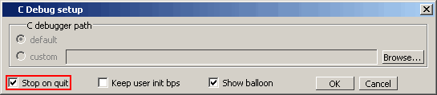

The
Stop on quit mode allows you to debug functions that are called
when the simulator exits.
Such functions include those referenced by
one of the following:
mti_AddQuitCB function in FLI code
misctf function called by a quit or
$finish in PLI code
cbEndofSimulation function called by
a quit or $finish in VPI code.
Procedure
- Start C
Debug by choosing from the
main menu.
- Choose from the main menu.
- Select Stop
on quit in the C Debug setup dialog box (Figure 1).
- Click OK.
Figure 1. Stop on quit Button
in C Debug Setup Dialog Box
- When you
enable this mode, if you have set a breakpoint in a quit callback
function, C Debug will stop at the breakpoint after you issue the
quit command in the simulator. This allows you to step and examine
the code in the quit callback function.
- Invoke
run -continue when you are done looking at the C code. When simulation
completes, the simulator automatically quits C-debugger and the
GUI (whether or not a C breakpoint was hit and you return to the
simulator prompt).